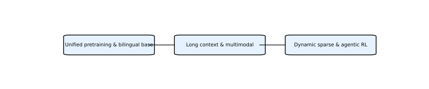

Tutorial
先读路线，再读论文。
这个站点的阅读顺序被重新整理成三层：总览路线、家族专题、原始论文。这样可以先建立技术地图，再进入模型结构、训练策略、评测结果和工程权衡。
- 01看四条路线
先用流程图理解每家公司的技术主轴。
- 02读专题解析
进入家族页，串起时间线与关键术语。
- 03下载原论文
在下载中心打开 arXiv 阅读页或直接 PDF。
- 04复盘成笔记
用问答式 Markdown 检查理解并整理分享稿。
Roadmaps
四条路线，四种工程选择。


Downloads
不再让浏览器打开裸 Markdown。
论文下载中心已经改成正式 HTML 页面，按模型家族分区，直接提供阅读页与 PDF 入口。原始 Markdown 被归档到 `content/markdown`，适合在 GitHub 源码里查看。
新的目录结构
.
├─ index.html
├─ downloads.html
├─ assets/
│ ├─ images/
│ ├─ flowcharts/
│ └─ site.css
└─ content/
├─ markdown/
└─ html/